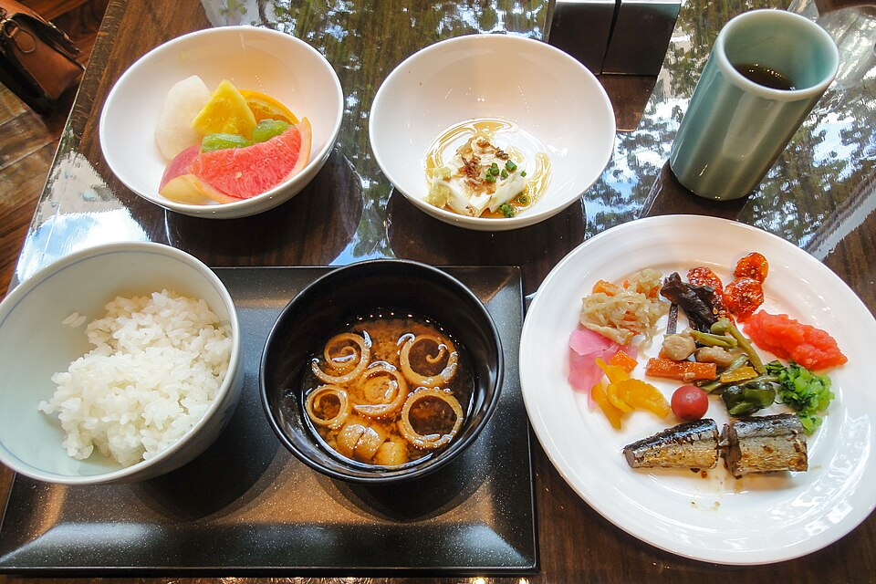

2026.11.16ホテル予約のキャンペーンの読み方（開催中セールの一覧）を更新しました
2026.11.14楽天カード系とn,カードJCBの位置づけを公開しました
このサイトはアフィリエイトプログラムを利用する場合があります。広告を含む記事には「PR」と明記します。方針は運営者情報と広告・編集方針をご覧ください。
Scenes
泊まる時間から選ぶ
まず、どんな朝を過ごしたいかから入ります。朝食の席、ラウンジの静けさ、部屋からの眺め、急がない滞在。その場面に届くためのステータスと予約の話は、各リンク先で確かめられます。

朝食の席朝食が付くステータスでは、朝の時間がゆっくりになります ラウンジの静けさ出発までの時間を、静かな席で過ごせます 部屋からの眺め上の階の部屋に泊まると、窓の外が変わります
部屋からの眺め上の階の部屋に泊まると、窓の外が変わります
 長くいられる滞在急がない滞在は、予約の組み立て方でも作れます
長くいられる滞在急がない滞在は、予約の組み立て方でも作れます
写真：朝食＝J o（CC BY-SA 3.0）／Wikimedia Commons、ラウンジ＝当サイト素材、その他＝Unsplash（フリー素材）
Treatment
ステータスで変わる、泊まったときの扱い
ステータスで変わるのは、ポイントの数字より先に、泊まったときの扱いです。代表的な4つを挙げます。いずれも施設と空室状況によるもので、対象と条件は各社の公式情報で確認します。
1朝食が付く対象のステータスでは、朝食が特典に含まれます。会場で座って、ゆっくり食べられる朝になります。どの予約で実績が付くか →
2ラウンジに入れる空港やホテルのラウンジで、出発やチェックインまでの時間を静かに過ごせます。ホテルの記事を見る →
3部屋の扱いが変わる空室状況により、上の階や広い部屋へのアップグレードがあります。確約ではない点も含めて、公式の条件を確認します。維持の判断材料 →
4チェックアウトが遅くなるレイトチェックアウトが認められると、最終日も昼過ぎまで部屋で過ごせます。あといくらまで払うか →
Moments
旅程の瞬間を整える
泊まる時間の前後にある、旅程の瞬間です。空港に着いた直後、現地でつながる通信、荷造り、もしもの備えを扱います。
 海外旅行の通信はどう選ぶか — Wi-Fiレンタル・eSIM・ローミングの費用と条件を公式情報で比較制度確認・費用試算：3つの方法の料金の形の違いと、グアム5日間の総額試算を整理しました。
海外旅行の通信はどう選ぶか — Wi-Fiレンタル・eSIM・ローミングの費用と条件を公式情報で比較制度確認・費用試算：3つの方法の料金の形の違いと、グアム5日間の総額試算を整理しました。
 空港送迎・レンタカー・現地ツアー・航空券はどこで予約するか — 予約先の種類と、申し込む前に確認する条件旅の実務：4分野の予約先の種類と、料金に含まれるもの・キャンセル条件の確認点を整理しました。
空港送迎・レンタカー・現地ツアー・航空券はどこで予約するか — 予約先の種類と、申し込む前に確認する条件旅の実務：4分野の予約先の種類と、料金に含まれるもの・キャンセル条件の確認点を整理しました。
 海外旅行の持ち物チェックリスト — 機内・預託・現地の3場面で仕分けする旅の実務：液体物とバッテリーのルールを先に固定し、場面別のリストと定番品を整理しました。
海外旅行の持ち物チェックリスト — 機内・預託・現地の3場面で仕分けする旅の実務：液体物とバッテリーのルールを先に固定し、場面別のリストと定番品を整理しました。
 カード付帯保険は複数枚で合算できるか — 死亡・後遺障害は合算されず、治療費用は枠が積み上がる制度確認：合算のルールを公式案内で確認し、按分の計算例で整理しました（エポス記事の続編）。
カード付帯保険は複数枚で合算できるか — 死亡・後遺障害は合算されず、治療費用は枠が積み上がる制度確認：合算のルールを公式案内で確認し、按分の計算例で整理しました（エポス記事の続編）。
Confirm
最後に確かめる
泊まりたい場面が決まったら、最後に数字と条件を確かめます。価格・必要ポイント・年会費・制度の条件は、この層に集めています。いずれも公式情報で確認し、費用の試算は計算ツールでできます。
10本
公開記事
2つ
計算ツール
2社
航空会社（JAL・ANA）の制度を扱う
3つ
ホテルチェーンの公式規約を確認
記事数・ツール数は当サイトの現在の掲載数です。制度の条件は各社の公式情報で確認しています。費用や必要ポイントの試算は、各記事と計算ツールで確認できます。
このサイトでやること
1. 制度と扱いの確認
ルール変更や条件改定の直後に、公式情報で「何がどう変わったか」を確認します。朝食やラウンジなど、泊まったときの扱いの変わり方も含みます。
2. 費用の試算
ステータス取得・維持にかかる実費と、特典の価値を、計算ツールと数字で比べます。
3. 期限前の判断
年度末やキャンペーン期限の前に、「あとどれだけ使えば届くか／届いても割に合うか」を判断する材料を出します。
 JGCの入会条件は今どうなっているか — Life Status 1,500ポイントとFLY ONの違い制度確認：JAL公式の現行条件を確認し、混同しやすい2つの仕組みを整理しました。
JGCの入会条件は今どうなっているか — Life Status 1,500ポイントとFLY ONの違い制度確認：JAL公式の現行条件を確認し、混同しやすい2つの仕組みを整理しました。
 特典航空券は本当にお得か — 1マイルの価値を計算する方法費用試算：現金価格と比べるための「1マイルあたりの価値」の出し方と、計算ツールの使い方。
ステータス維持に「あといくらまで」なら払ってよいか — 判断の枠組み判断：メリットの見積もり方と、撤退ラインの決め方。
ホテルは公式サイトと予約サイト、どちらで予約すべきか — ステータス実績が付く条件を3チェーンの公式規約で確認制度確認・費用試算：第三者サイト予約の扱いを3チェーンの規約で確認し、価格差の分かれ目を試算しました。
ホテル予約のキャンペーンの読み方 — 常設の仕組み・定例セール・開催中一覧を公式確認で整理公式確認：キャンペーンは常設の仕組み、定例セール、開催中の一覧の3層に分けると読み違えません。公式ページで確認した仕組みと開催中セールを整理しました。
特典航空券は本当にお得か — 1マイルの価値を計算する方法費用試算：現金価格と比べるための「1マイルあたりの価値」の出し方と、計算ツールの使い方。
ステータス維持に「あといくらまで」なら払ってよいか — 判断の枠組み判断：メリットの見積もり方と、撤退ラインの決め方。
ホテルは公式サイトと予約サイト、どちらで予約すべきか — ステータス実績が付く条件を3チェーンの公式規約で確認制度確認・費用試算：第三者サイト予約の扱いを3チェーンの規約で確認し、価格差の分かれ目を試算しました。
ホテル予約のキャンペーンの読み方 — 常設の仕組み・定例セール・開催中一覧を公式確認で整理公式確認：キャンペーンは常設の仕組み、定例セール、開催中の一覧の3層に分けると読み違えません。公式ページで確認した仕組みと開催中セールを整理しました。
 楽天カード系とn,カードJCBの位置づけ — ポイント型とマイル型の分かれ目位置づけ整理：楽天系3券種とn,カードJCBについて、ポイント型とマイル型の役割の違いと、公式ページで確認した主な数字を整理しました。
楽天カード系とn,カードJCBの位置づけ — ポイント型とマイル型の分かれ目位置づけ整理：楽天系3券種とn,カードJCBについて、ポイント型とマイル型の役割の違いと、公式ページで確認した主な数字を整理しました。
 エポスカードの海外旅行保険は使えるか — 利用付帯の条件と補償額を公式情報で確認制度確認・費用試算：年会費無料のカード付帯保険が機能する条件と、対象外になる支払い・人を整理しました。
エポスカードの海外旅行保険は使えるか — 利用付帯の条件と補償額を公式情報で確認制度確認・費用試算：年会費無料のカード付帯保険が機能する条件と、対象外になる支払い・人を整理しました。
Tools
計算ツール
制度変更アラート（無料）
JAL・ANAのステータス制度、カードの条件、ふるさと納税のルールに変更があったとき、メールでお知らせします。登録フォーム（運営：globe Entertainment）